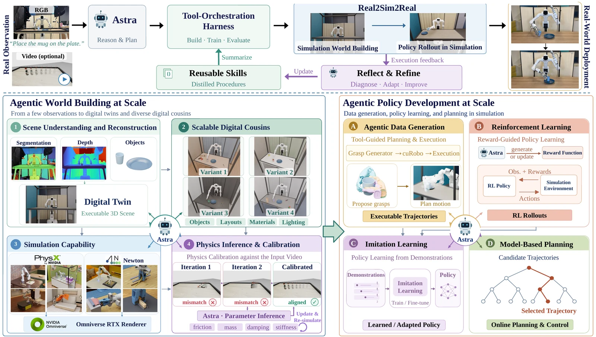
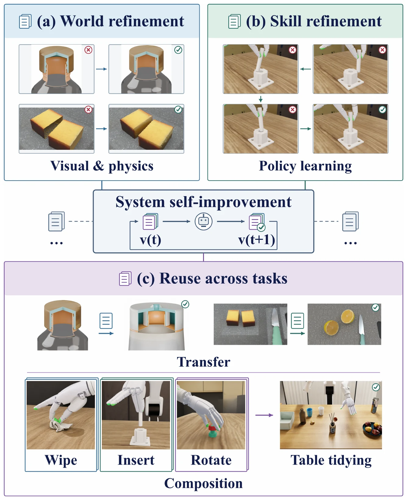
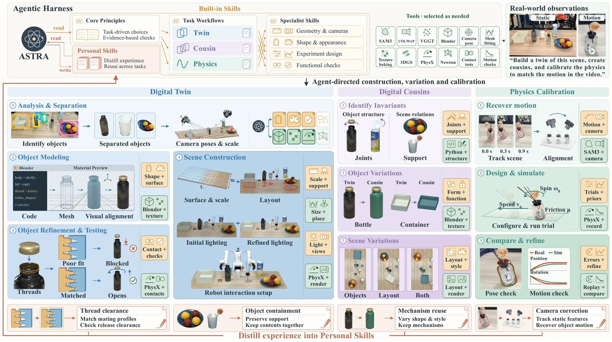
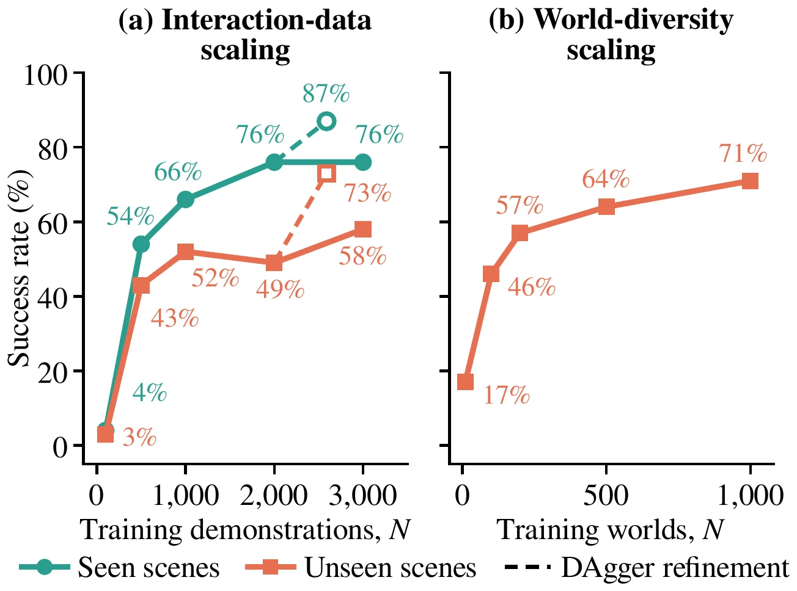
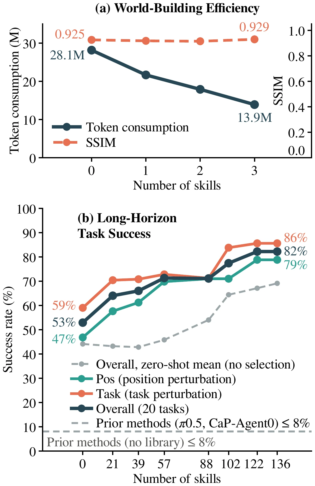

arXiv 2611.31098 · cs.RO · v1 2026 年 11 月 23 日 · 中文精读
Real2Worlds2Real: Scaling Self-Improving Agentic Real2Sim2Real for Robot Manipulation
作者 Jinzhong Gu*、Jiakai Chen*、Xinyi Cao*、Yan Shen*、Hangke Sui*、Shutian Zheng、Xiang Xiao†、Haoran Lu、Fan Xu、Lu Shi、Daochen Shi、Ruihua Zhang、Wei Zhan、Masayoshi Tomizuka、Ruihai Wu（通讯），来自加州大学伯克利分校、NVIDIA、UIUC 和 CMU（* 共同一作，† NVIDIA 方面的负责作者）。
关于这份精读。这篇论文在 arXiv 上登记的是默认的非独占分发许可（arXiv nonexclusive-distrib 1.0）。经站点作者决定放原图：图 1 到图 5 从 PDF 裁切（只裁切和缩放），图注保留文字描述，“看原图”打开 arXiv HTML 版的对应位置。图 4、图 5 另外按 PDF 矢量路径、对照坐标轴刻度读出每个点后重画了一版，图注标“重画”。正文不逐字翻译，表格数字照录原文。“读者注”是我核算或对照的结果，不属于论文内容，页尾有汇总。
版本和代码。arXiv 只有 v1（2026-11-23）。项目主页写着代码“Code soon”，截至 2026-11-26 没有公开，所以本页没有代码对照。正文多处说“细节见补充材料”（表 2 的指标定义、表 3 的任务覆盖），但 arXiv 上的 PDF 只有 12 页，没有附带补充材料，这些细节我看不到。项目主页没有标许可，只链接，不抓图。
Real2Sim2Real 的想法是：用少量真实观测搭一个仿真，在仿真里大量生成数据、训练策略，再部署回真机。难点在“规模化”：每换一个场景，就有人要重新抠几何、调关节、调摩擦；每换一个任务，又要重新决定用规划、强化学习还是模仿学习。这篇论文把这两头都交给一个通用编码代理（论文 LLM 声明里写的是 GPT-6 Astra），给它一套工具和分层的“技能”文档，让它自己决定怎么做。
框架分两段，外加一个贯穿两段的记忆机制：
主要结果：
读完我认为最值得记住的五点。
引言的论证顺序是：VLA（π0、OpenVLA、GR00T N1）和世界动作模型（WorldVLA、Cosmos Policy 等）都说明数据规模和多样性重要；真机数据靠遥操作，人力、看护、复位都贵；Real2Sim2Real 能用少量真实观测撑起大量仿真数据。
作者认为“规模化”不只是多生成几个场景。它还要求两件事：
这两件事都需要“看反馈、改决定”，所以作者用代理来做，而不是用固定流水线。
贡献有三条：

分三类，每类作者都指出一个缺口。
MimicGen 系列用以物体为中心的变换和技能重组扩充示范；RoboGen、GenSim2 用规划和强化学习生成任务和监督；也有代理框架用混合求解器和技能探索自动找轨迹（AnyTask、SkillWeaver）。ARSTAG、DREAM、DexAgent 先重建任务专用仿真，再分别用状态输入专家、任务与运动规划、人体动作引导生成示范。本文的不同点是：把多样的、物理上有依据的世界和代理调度的数据生成结合起来，并研究世界多样性和数据规模怎样影响策略的性能和泛化。

整体流程：给定 RGB 图像或视频和一句任务描述，代理先在技能引导下的工具编排框架里建世界（3.1、3.2），再在这些世界里调度策略开发（3.3），最后把选中的策略部署到真机。
示意：我按 3.1–3.3 节的文字画的结构，不是论文的图。虚线是反馈回路。
技能引导的编排。框架给一个通用编码代理提供共享工作区，里面存着不断演化的场景和之前操作的结果，所以代理能边做边调整决定。程序性知识分三层：
任务开始时，代理拿到核心原则和相关工作流；专项技能按需查阅。三层合起来引导决策，但不规定工具调用的固定顺序。
经验提炼和技能复用。在核心原则的引导下，代理回看执行记录，把有效的构建和修正流程写成“个人技能”：问题怎么发现、怎么解决、证据是什么，有时还写适用条件和怎么改到新场景。个人技能和内置技能分开保存，用编码客户端自带的机制存取。
基于执行的修正和验证。两类反馈：
框架还用显式任务约束来把关，例如带关节的孪生必须有必要的部件和关节关系。验证用任务专属的仿真检查，比如关节运动、接触行为、形变完整性，而且要求证据和当前资产一致。检查不过，代理就按诊断改资产或物理参数，再重跑检查。

代理把可操作物体重建成可编辑的 3D 资产：写 Blender 脚本建几何和任务相关的交互结构（关节部件、可变形面），反复修改。有额外几何线索时，它还可以：
背景单独重建，用网格、高斯泼溅或二者结合。视觉复杂、图像覆盖足够的背景用高斯泼溅保留外观；桌面、障碍物这类接触面用网格做碰撞几何。如果高斯背景里包含要操作的物体，就删掉物体原位置附近的高斯点，然后代理检查渲染视图里有没有残影或缺块，必要时调整删除范围或重建。
物体层。以孪生为参照，改任务物体的几何、外观和材质，但保留任务相关的交互结构：
有合适资产时，也可以直接从现有库（LeHome、GarmentLab）里取。
场景层。把物体层的表亲和布局、背景外观、光照的变化组合起来。改布局时，代理先从孪生和任务里识别重要的空间和功能关系，再重新摆放和旋转物体，同时保证三件事：
每个候选场景都要经过渲染和任务相关的仿真交互，验证视觉合理、物理稳定、可以操作，才会被接受。
刚体和带关节物体用 PhysX，靠碰撞几何和关节约束模拟接触和运动。可变形物体按行为选表示：
这些表示用兼容的 PhysX 或 Newton 求解器模拟。精细的视觉表面由仿真形变驱动，这样渲染质量高，物理分辨率不用跟着提高。渲染时，可交互的网格资产和周围环境放在同一个 USD 场景里，用 Omniverse RTX 渲染器，支持纯网格渲染，也支持网格物体加高斯泼溅背景的混合渲染。
每个世界都需要质量、摩擦、阻尼、材料刚度等参数。分两步：
“核实实际生效的参数值”这一步值得注意：PhysX 之类的引擎里，摩擦等参数常常由两个接触物体的材质按某种规则合成，代理设的值不一定就是生效的值。论文没有展开具体怎么核实。
不走固定训练流水线，代理按任务要求和手头已有的示范或策略选工具和学习方法：
仿真反馈帮代理修改程序逻辑、工具参数或奖励设计。控制程序和 RL 策略既可以直接当任务策略，也可以生成示范。
拿到示范后，代理可以训练 ACT 或 Diffusion Policy 这类视觉运动策略。在多个数字表亲里用不同初始条件收集示范，可以拓宽训练数据覆盖的任务构型。代理在仿真里评估这些策略，按观察到的失败决定是否、怎样修正：
迭代中验证过的开发流程同样提炼成技能，记录适用条件和对付的是哪类失败。最后把选中的策略拿到真机上评估。
四个问题，从下游往上游：
Dexmate 机器人，装 Sharpa 灵巧手和 Orbbec RGB-D 相机。每个方法每个任务 30 次真机试验，报成功率。
任务。
两组对比。
| (a) 仿真世界构建的比较 | |||||
|---|---|---|---|---|---|
| 方法 | Peg | Cup | Gear | Wipe | Cap |
| ACT（模仿学习） | 66.7% | 53.3% | 43.3% | 46.7% | 53.3% |
| 真机训练 | 86.7% | 96.7% | 86.7% | 60.0% | 93.3% |
| PolaRiS | 83.3% | 66.7% | 60.0% | 50.0% | 63.3% |
| SimFoundry | 73.3% | 83.3% | 40.0% | 46.7% | 56.7% |
| Real2Worlds2Real | 100.0% | 100.0% | 93.3% | 70.0% | 93.3% |
| (b) 代理式策略开发的比较 | |||||
| 方法 | Lift | PickPlace | Nut | Cup | |
| ACT（模仿学习） | 56.7% | 50.0% | 40.0% | 53.3% | |
| ENPIRE | 76.7% | 83.3% | 53.3% | 80.0% | |
| ASPIRE | 90.0% | 86.7% | 63.3% | 80.0% | |
| Real2Worlds2Real | 100.0% | 90.0% | 73.3% | 100.0% | |
重画 · 表 1 的每格成功率（点）和 Wilson 95% 区间（线），每格 n = 30。悬停看分数。
结果 (a)。本文方法明显好于另外两个 Real2Sim 基线，并在所有任务上和真机训练相当或更好。PolaRiS 和 SimFoundry 比 ACT 起点提升有限，作者归因于任务关键几何不准，例如 SimFoundry 重建出的齿轮没有齿，轴距也不对，仿真里学到的修正迁移不到真实装配上。作者还解释了为什么能超过真机训练：同样的数据预算下，仿真让策略见到更多样的物体摆放。
结果 (b)。本文好于两个代理基线，Nut 和 Cup 上提升明显。作者用 Nut 举例：ASPIRE 和 ENPIRE 靠脚本化的旋拧动作，对螺母位置变化敏感；本文在脚本执行之外加了闭环策略，按执行反馈调整动作。
30 次的分辨率是 3.33 个百分点，表里每个数都是 k/30（例如 93.3% = 28/30，46.7% = 14/30）。和“真机训练”逐任务做双侧 Fisher 精确检验：Peg 30 对 26，p = 0.11；Cup 30 对 29，p = 1.0；Gear 28 对 26，p = 0.67；Wipe 21 对 18，p = 0.59；Cap 28 对 28，p = 1.0。没有一个任务显著。五个任务合起来是 137/150 对 127/150（91.3% 对 84.7%），p ≈ 0.11。所以论文说“相当或更好”是准确的，不宜读成“超过真机训练”。和 ACT 起点比，四个任务 p < 0.001，只有 Wipe（21 对 14）p = 0.12 不显著。五个方法的平均：ACT 52.7%、真机训练 84.7%、PolaRiS 64.7%、SimFoundry 60.0%、本文 91.3%（我算的，论文没给平均）。
和最强的代理基线 ASPIRE 逐任务比：Lift 30 对 27，p = 0.24；PickPlace 27 对 26，p = 1.0；Nut 22 对 19，p = 0.58；Cup 30 对 24，p = 0.024。只有 Cup 显著。论文特意点名的 Nut，差 3 次，在 30 次里分不开。四任务合计 109/120 对 96/120（90.8% 对 80.0%），p ≈ 0.027，整体上的优势是有的。另外 (b) 里所有方法都用本文的仿真环境，所以这组对比只说明调度方式的差别，不涉及世界构建。
(a) 组明写了所有 Real2Sim 方法“只构建数字孪生”。所以标题里的“一族世界”（数字表亲）和 3.2.4 节的视频物理标定，在真机实验里都没有出场；或者说，论文没有说 (a) 组的孪生做过物理标定。表亲的价值只有 4.2 节 Stack Cups 一个任务的曲线支撑。(b) 组用的是“我们的仿真环境”，没说包不包括表亲。要证明表亲对真机有用，最直接的实验是 (a) 组再加一行“孪生 + 表亲”，论文没有做。“同样的数据量”在 (a) 里具体是多少次交互，论文也没给。
叠杯（Cup）同时出现在 (a) 和 (b)。ACT 基线两处都是 53.3%（16/30），本文两处都是 100%。看起来 ACT 起点是同一批试验；本文的两个 100% 是不是同一批，论文没说。如果是同一个策略，(a) 里它是“孪生 + RL decorator”，(b) 里它是“代理自己选的方法”，说明在 Cup 上代理选的就是 RL decorator 这条路（我的推断）。
为了排除代理调度的影响，这一节统一用 Diffusion Policy，训练设置固定，只在代表性的 Stack Cups 任务上每次变一个维度。

重画 · 图 4（看原图 ↗）。数值是我从 PDF 矢量路径按刻度读出的，和图上标注的百分数一致；DAgger 点的横坐标图里没标，读图约 2,600。圆点：见过的场景；方块：没见过的场景；空心：DAgger 修正后。
| (a) 示范数 N | 100 | 500 | 1,000 | 2,000 | 3,000 | DAgger（约 2,600） |
|---|---|---|---|---|---|---|
| 见过的场景 | 4% | 54% | 66% | 76% | 76% | 87% |
| 没见过的场景 | 3% | 43% | 52% | 49% | 58% | 73% |
| (b) 世界数 N | 10 | 100 | 200 | 500 | 1,000 | |
| 没见过的场景 | 17% | 46% | 57% | 64% | 71% |
横坐标按刻度换算：(a) 的五个点在 N = 100、500、1,000、2,000、3,000；(b) 在 10、100、200、500、1,000。DAgger 的虚线从 N = 2,000 的点出发，终点横坐标约 2,590，正文没写加了多少条纠正示范，按图看约 600 条（我的读数）。三点值得注意：
两张图在“1,000 条示范”处可以对上：(a) 没见过场景是 52%，(b) 训练世界 1,000 个时是 71%，训练世界 10 个时只有 17%。所以 (a) 用的“固定世界集合”应在 100 到 200 个之间（(b) 在这两档是 46% 和 57%）。这只是插值推断，论文没给 (a) 的世界数。如果推断成立，(b) 的含义更强：同样 1,000 条示范，世界从约 150 个加到 1,000 个，没见过场景的成功率能提高近 20 个点，超过把示范从 1,000 条加到 3,000 条的效果（52% → 58%）。
世界质量。表 2 用三个来源的真实采集评估重建世界：
每个方法拿自己规定的输入，评分时不做事后对齐或缩放。四个维度：
两个消融：
| 方法 | 视觉 | 几何 | 物理 | 场景 | |||||||
|---|---|---|---|---|---|---|---|---|---|---|---|
| PSNR ↑ | SSIM ↑ | LPIPS ↓ | 深度质量 ↑ | Object F1 ↑ | 位置质量 ↑ | 可见表面 F@1cm ↑ | 稳定性 ↑ | 穿透质量 ↑ | 支撑召回 ↑ | 占据 IoU ↑ | |
| ACDC | 9.5 | 0.08 | 1.12 | 0.000 | 0.05 | 0.000 | 0.000 | 0.00 | 0.00 | 0.00 | 0.04 |
| SimFoundry | 10.4 | 0.60 | 0.66 | 0.005 | 0.26 | 0.006 | 0.002 | 0.17 | 0.00 | 0.01 | 0.05 |
| PolaRiS | 21.5 | 0.72 | 0.34 | 0.033 | 0.58 | 0.033 | 0.037 | 0.28 | 0.09 | 0.16 | 0.07 |
| 本文 w/o agent（固定流水线） | 12.3 | 0.61 | 0.46 | 0.001 | 0.54 | 0.001 | 0.002 | 0.10 | 0.41 | 0.47 | 0.01 |
| 本文 w/o adaptive refinement | 15.7 | 0.66 | 0.46 | 0.035 | 0.37 | 0.047 | 0.012 | 0.24 | 0.14 | 0.23 | 0.01 |
| 本文 | 23.8 | 0.85 | 0.25 | 0.063 | 0.69 | 0.062 | 0.108 | 0.63 | 0.55 | 0.58 | 0.16 |
论文结论：四个维度上本文都好于 Real2Sim 基线和两个消融，说明代理编排和自适应修正都必不可少。逐列核对，本文确实在全部 11 列都是最好。
绝对值很低。本文的深度质量 0.063、位置质量 0.062、可见表面 F-score@1 cm 0.108。“考虑完整度”的分数会因漏检和误检扣分，“不做事后对齐或缩放”又让单目输入的尺度误差全部计入，所以低分可能主要来自这两项。指标的具体定义在补充材料里，arXiv 版没有附，我无法判断 0.06 意味着几厘米。只能说这张表适合比较方法之间的相对好坏，不适合当绝对精度看。
两个消融各有所长。固定流水线（w/o agent）的几何很差（深度 0.001、位置 0.001），但 Object F1 0.54、穿透 0.41、支撑召回 0.47 都比“有代理但不修正”（0.37、0.14、0.23）高。也就是说，代理不做反馈修正时，物体找得更不全，摆放也更容易互相穿透、悬空。只有两样都加上，所有列才同时变好。论文没有分析这种交叉，我的理解是：代理带来的是几何精度，反馈修正带来的是物理合理性。
ACDC 在表里出现，但正文没有提到它（它就是参考文献 [11] 的 digital cousins 方法）。
物理标定。作者从三个来源的真实视频构造了 7 个参数估计任务，涵盖摩擦、恢复系数和摆长：
在同一协议下比较四类做法：
评估三项：
| 方法 | 参数误差 ↓ | 预测误差 ↓ | 约束违反 ↓ |
|---|---|---|---|
| 默认参数 | |||
| PhysX 默认值 | 119.4% | 83.1% | 20.1% |
| LLM 手册值 | 25.0% | 18.3% | 20.1% |
| 基于视频的系统辨识 | |||
| NIRPI [17] | 48.4% | 17.1% | – |
| Garcia 等 [13] | 3702% | 515% | – |
| 单次推断 | |||
| 2D 跟踪 + 解析式 | 24.4% | 13.1% | – |
| Qwen3-VL-8B | 48.2% | 23.6% | 33.9% |
| Claude Opus 5.5 | 25.4% | 15.4% | 20.0% |
| 本文 | 4.2% | 2.6% | 0.0% |
本文覆盖全部 7 个任务，参数误差 4.2%，预测误差 2.6%；摩擦的上下界满足观测到的运动约束，在评估过的扰动子集上估计值变化很小。作者也说明，各方法覆盖的任务不同，细节在补充材料。
平均不在同一组任务上。论文自己说“各方法的任务覆盖不同”。本文覆盖 7 个，其他方法的平均是在它们能做的子集上算的，子集是哪些在补充材料里，看不到。比如 Garcia 等的 3702% 可能只来自一两个它不适用的任务；而“–”表示这几个方法不输出约束违反这一项。不同覆盖下的平均，严格说不能直接排名。
本文是闭环，VLM 是单次。本文的做法是代理设计仿真试验，逐个候选值跑 PhysX 并和视频对齐（3.2.4 节），本质上是带仿真器的系统辨识。Claude Opus 5.5、Qwen3-VL-8B 是“看视频直接说一个数”。所以 4.2% 对 25.4% 体现的是“能不能跑仿真反复对比”，而不是“GPT-6 Astra 比 Claude 更懂物理”。公平的对照应是把同一个仿真闭环交给不同的模型来驱动，论文没有做。
两个 20.1%。PhysX 默认值和 LLM 手册值的约束违反都是 20.1%，参数误差却差了近 5 倍（119.4% 对 25.0%）。我猜违反来自同一个或同几个任务，与参数取值关系不大（未核实）。
两组实验都是逐步扩充技能库，其他条件（输入、评估标准、设置）不变。
建世界效率。留出任务是切柠檬。代理在四个嵌套的技能库下各建一次这个世界：
输入和验证标准完全相同。通过验证所需的 token 每一级都在下降，从 2,810 万降到 1,390 万（约一半）；重建质量相当（SSIM 0.925 对 0.929）。作者的解释是：代理复用存下来的流程，而不是靠试错重新摸索。
长时程任务。在 LIBERO-Pro Long 上，代理为 20 个长时程任务写控制脚本：一半带位置扰动，一半带任务扰动，每个任务在 50 个留出初始状态上评估。技能库从 0 个扩到 136 个（都来自其他任务）时：
对比之下，没有技能库的已有方法（π0.5、CaP-Agent0）都不超过 8%。

重画 · 图 5（看原图 ↗）。(a) 的 0 和 3 两档是图上标注值，1、2 两档按刻度读出；原图还有一条 SSIM 折线（0.925 到 0.929），这里省略。(b) 的端点和正文一致，中间各点按刻度读出。
按刻度读出的四档 token 是 28.1M、21.6M、17.9M、13.9M，逐级下降，和正文“每一级都下降”一致。13.9/28.1 = 0.495，即降了 50.5%，正文说“约 50%”。不过这是一个留出任务（切柠檬）在每档技能库下各建一次的结果，论文没有说重复了几次。代理每次运行的 token 消耗本身波动很大，单次的下降幅度只能当示例看。SSIM 折线中间两档读出来约 0.91 到 0.92，比两端略低，变化都在 0.02 以内。另外，即使是 1,390 万 token，也说明搭一个场景的代理开销并不小。
横坐标 0、21、39、57、88、102、122、136 是等比例刻度（每个技能约 1.07 pt），八个点按刻度读出：
每一点的总体都正好是位置、任务两项的平均，例如 (69.8 + 72.8)/2 = 71.3。这和“各 10 个任务、每任务 50 个状态”对得上：每种扰动 500 回合，分辨率 0.2 个百分点，读数也都是 0.2 的倍数。
曲线不单调：88 个技能时，任务扰动从 72.8 降到 71.2，总体从 71.3 降到 71.1；122 到 136 完全持平。“不挑程序的平均”在 0 到 39 个技能之间从 44.1 降到 42.8，到 57 个才回升。“20 个任务”我推断是 LIBERO-Long 的 10 个任务各配两种扰动（未核实）。原图图例里“已有方法 ≤ 8%”出现了两次，一次写“(π0.5, CaP-Agent0)”，一次写“(no library)”，像是排版遗留。
这里的代理写的是控制脚本，即 3.3 节的代码即策略。它可以调用分割、抓取、运动规划工具，通常也能读仿真状态；π0.5 是从图像端到端出动作的 VLA。LIBERO-Pro 的扰动正是为了击穿 VLA 对训练布局的记忆而设计的，所以 π0.5 不到 8% 并不意外。这组对比说明“写程序的代理比端到端 VLA 更抗这类扰动”，不能说明“技能库”本身的作用。技能库的作用要看 0 个技能（52.9%）到 136 个技能（82.2%）这一段。
还有一个协议问题：82.2% 是“挑最好的候选程序”后的成绩。如果挑选用的就是那 50 个留出初始状态，这个数就偏乐观。论文没说明挑选用的是哪些状态，相对公平的数是“不挑程序的平均”：44.1% 到 69.1%。
结论复述贡献：
论文没有单独的局限一节。
LLM 声明。工具编排框架里驱动建世界和策略开发的模型是 GPT-6 Astra；Qwen3-VL-8B 和 Claude 只作为表 3 的对照模型；ChatGPT 用于润色语言和排版 LaTeX 表格。
SIMPLER、Real-to-Sim 评测和 FabricBench 都要回答“仿真里的排序能不能代表真机”，所以报告 Pearson、MMRV、Spearman 这类一致性指标。本文把仿真当训练场，判断标准只有一个：策略回到真机后成功率高不高。它没有报告任何仿真成功率和真机成功率的对照，所以无从判断本文的世界能不能用来评测，比如能否替代真机给策略排名。表 2 的保真度指标是对静态场景打分，不涉及动态交互的一致性。
| 名称 | 是什么 | 主页 / 代码 | 论文 |
|---|---|---|---|
| Real2Worlds2Real | 本文 | real2worlds2real.github.io；代码未发布 | 2611.31098 |
| PolaRiS | 表 1(a)、表 2 的 Real2Sim 基线 | – | 2512.16881 |
| SimFoundry | 表 1(a)、表 2 的基线；Fruits 场景来源 | – | arXiv 2606（参考文献 [44]） |
| ACDC | 数字表亲方法，表 2 基线 | – | 2410.07408 |
| ASPIRE | 表 1(b) 的代理基线 | – | 2607.00272 |
| ENPIRE | 表 1(b) 的代理基线 | – | 2606.19980 |
| Policy Decorator | RL 残差修正，表 1(a) 所有方法共用 | – | ICLR 2025 |
| Agentic Real2Sim | 相关的代理式构建工作 | – | 2607.19190 |
| ARSTAG | 相关的代理式 Real2Sim2Real 数据生成 | – | 2609.24563 |
| LIBERO-PRO | 4.4 节的长时程评测 | github.com/Zxy-MLlab/LIBERO-PRO；站内 LIBERO | 2510.03827 |
| CaP-X | CaP-Agent0 所在的编码代理基准 | – | 2603.22435 |
| ARKitScenes | 表 2 的场景来源之一 | github.com/apple/ARKitScenes | NeurIPS 2021 数据集 |
| HOPE-Video | 表 2 的场景来源之一 | github.com/swtyree/hope-dataset | IROS 2022 |
| GAUGE | 表 3 的视频来源之一 | 站内 精读 | 2608.05948 |
| cuRobo | 运动规划 | NVlabs/curobo | 2310.17274 |
| Newton | 可变形仿真 | newton-physics/newton | – |
| 站内 | 对照阅读 | Real-to-Sim、PhysTwin、SIMPLER、FabricBench、六个策略、LIBERO | – |